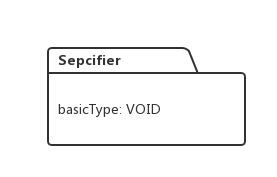
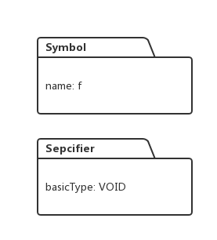
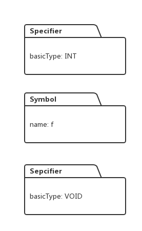
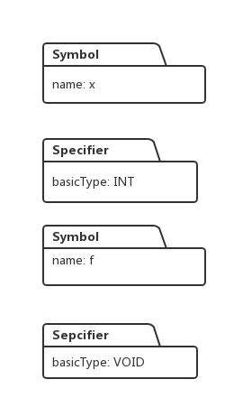
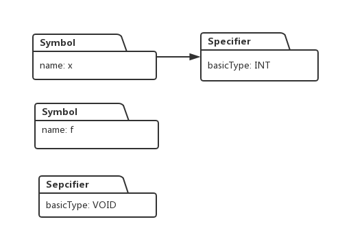
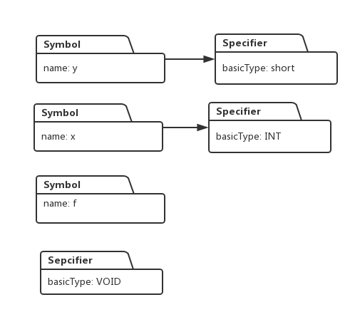
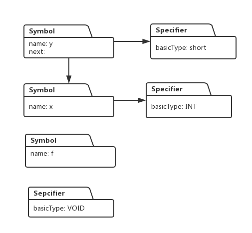
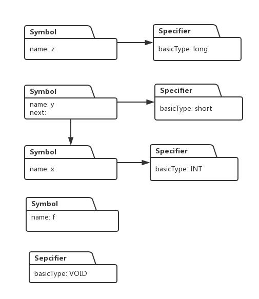
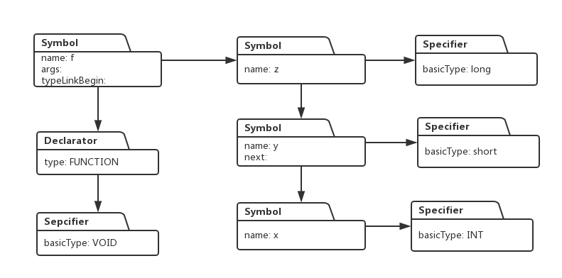

阅读博客的朋友可以通过下面链接查看代码调试视频：
http://study.163.com/course/courseMain.htm?courseId=1002830012
上一节，我们已经实现了变量声明语句的语法识别，并在识别过程中建立了变量的类型系统，这一节，我们看看函数接口声明的语法识别过程，并在识别过程中，为函数建立类型系统。
这次，我们要分析的C语言语句如下：
void f(int x, short y, long z);
解析函数声明的语法如下：
1. EXT_DEF -> OPT_SPECIFIERS FUNCT_DECL SEMI
2. FUNCT_DECL -> NEW_NAME LP VAR_LIST RP
3. | NEW_NAME LP RP
4. VAR_LIST -> PARAM_DECLARATION
5. | VAR_LIST COMMA PARAM_DECLARATION
6. PARAM_DECLARATION -> TYPE VAR_DECL
当解析开始时，解析器读入void , 得到void对应的标签TYPE,此时，解析器会根据表达式 TYPE_SPECIFIER -> TYPE 进行一次reduce, 并且生成一个Spcifier对象，该对象的类型为void, 这样在属性堆栈上就压入一个Specifier对象：

接着根据表达式TYPE_OR_CLASS -> TYPE_SPECIFIER， SPECIFIERS -> TYPE_OR_CLASS， OPT_SPECIFIERS -> .SPECIFIERS， 连续进行多次reduce操作，最后，非终结符OPT_SPECIFIERS 会被压入解析堆栈。
然后解析器读入 f, 得到f 对应的标签NAME, 并通过表达式NEW_NAME -> NAME进行一次reduce操作，此时生成一个Symbol对象，这样，属性堆栈上就有了两个对象：

然后解析器继续读入(, 返回标签LP, 继续读入int, 返回标签TYPE, 于是根据表达式TYPE_SPECIFIER -> TYPE 进行reduce, 同时生成一个类型为int 的Specifier对象:

继续根据表达式TYPE_NT -> TYPE_SPECIFIER 做一次reduce, 然后变量x就被读入解析器，同时返回它对应的标签NAME, 由于满足表达式 NEW_NAME -> NAME, 于是解析器做reduce同时,再次生成一个Symbol对象:

接下来是根据VAR_DECL -> NEW_NAME 进行reduce, 然后是根据PARAM_DECLARATION -> .TYPE_NT VAR_DECL 进行reduce, 这时候将栈顶的Specifier 添加到底下Symbol对象的类型列表中：

接着继续根据VAR_LIST -> PARAM_DECLARATION做reduce, 接下来的流程跟读入int x一样，解析器分别读入short y 并构造相应的Symbol和Specifier：

此时，解析堆栈上的非终结符满足表达式：VAR_LIST -> VAR_LIST COMMA PARAM_DECLARATION，因此解析器做reduce操作，同时，将变量y的Symbol与变量x的Symbol连接起来：

接下来，解析器继续读入long z, 就像前头流程，同样创建Specifier 和Symbol对象：

此时，解析堆栈上的非终结符再次满足表达式：VAR_LIST -> VAR_LIST COMMA PARAM_DECLARATION，因此解析器再次进行reduce操作，同时也将z对应的Symbol 与 y 对应的Symbol串联：
做完这些步骤后，解析器把)读入，也就是做一次shift操作，同时得到它的标签RP, 这时，解析堆栈上的符号满足表达式：
FUNCT_DECL -> .NEW_NAME LP VAR_LIST RP
因此Parser进行reduce操作，将f对应的Symbol对象里的args指针指向z对应的Symbol,并且将最开始生成的Specifier与f对应的Symbol结合起来，同时生成一个类型是FUNCTION 的 Declarator对象，并加入到f对应的Symbol对象的类型列表：

到上图为止，整个函数对应的符号表和类型系统就构建完毕了。
解析器把最后的分号shift进来，于是解析堆栈上的符号又满足表达式：
EXT_DEF -> .OPT_SPECIFIERS FUNCT_DECL SEMI
于是解析器又在此进行reduce, 然后再进行两次reduce,最后Parser进入接收状态。